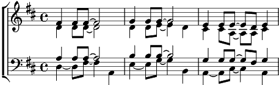

Refrain: Ô mon île au soleil
Paradis entre terre et ciel
Où le flot, tout le long des jours
Chante au sable fin sa chanson d'amour
1. Ce n'est qu'une île au grand soleil
Un îlot parmi tant d'autres pareils
Où mes parents ont vu le jour
Où mes enfants naîtront à leur tour
Refrain
2. Au grand matin coiffée de rosée
Elle a l'air d'une jeune épousée
Je la regarde et mon fardeau
Semble aussitôt léger sur mon dos
Refrain
3. Chez nous, la Femme à l'aube est debout
Coupant la canne ou bien le bambou
L'homme pêche et tire à son bord
Un grand filet plein de poissons d'or
Refrain